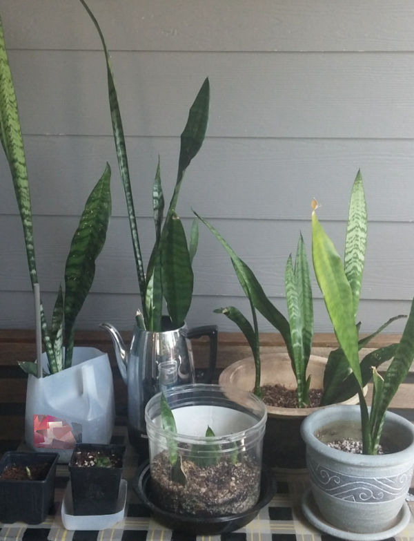

Sansevieria
It all started with my crusade for cleaner indoor air. We got this beauty from a rummage sale at a local church. It's a Sansevieria, also known as mother-in-law's tongue or snake plant. They are supposedly quite good at air filtration.
From that, I split the plant to a couple other pots and propagated some babies from one of the leaves. Just look at them; aren't they majestic?

Spider plant
Just like snake plants, Spider plants are known for their air filtrating capabilities. In fact, according to a study conducted by NASA, these plants filter formaldehyde and xylene out of the air for us. Note how the Sansevieria's also in the list of awesome plants for air quality.
We got the spider plant in offshoot-form from my mother-in-law. They do extremely well when left to root(and even just, grow!) in just water.